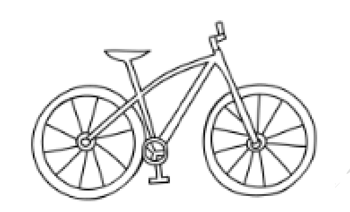

הקודם
גאומטריה לכיתה ח' — עמוד 3 / 35
הבא
חוקיות
פונקציה ריבועית
פונקציה קווית
משפט פיתגורס
משוואה ריבועית
פילוג מורחב
מקבילית
משוואות
גאומטריה ח'
גאומטריה לכיתה ח'
3
ב
היקף מעגל ושטחו
גאומטריה · כיתה ח' · המספר π, היקף ושטח עיגול
1
תומר מדד את רדיוס הגלגל של אופניו וקיבל
30
ס"מ. חשבו את היקף הגלגל (היעזרו ב־
π ≈ 3.14
). "ההיקף של הגלגל הוא בערך
ס"מ".
